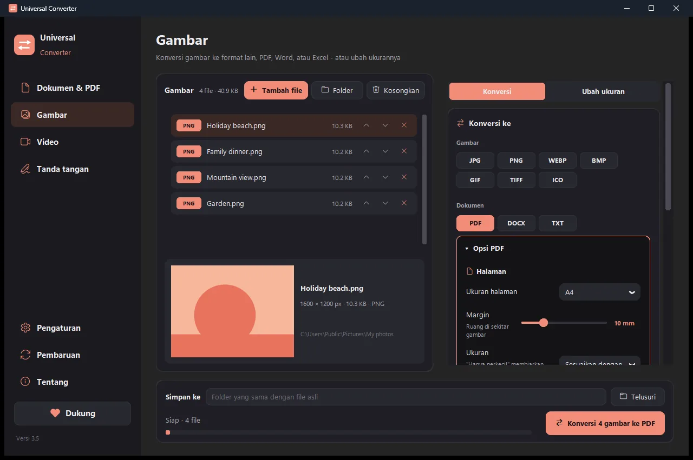
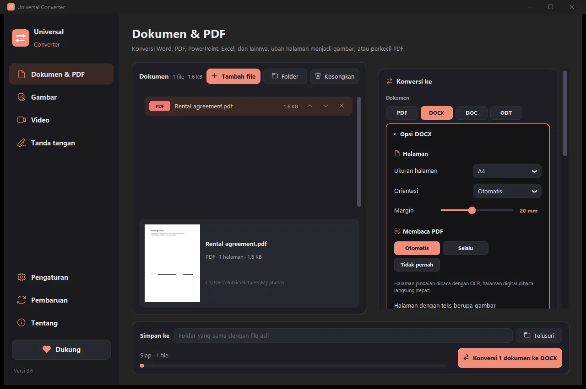
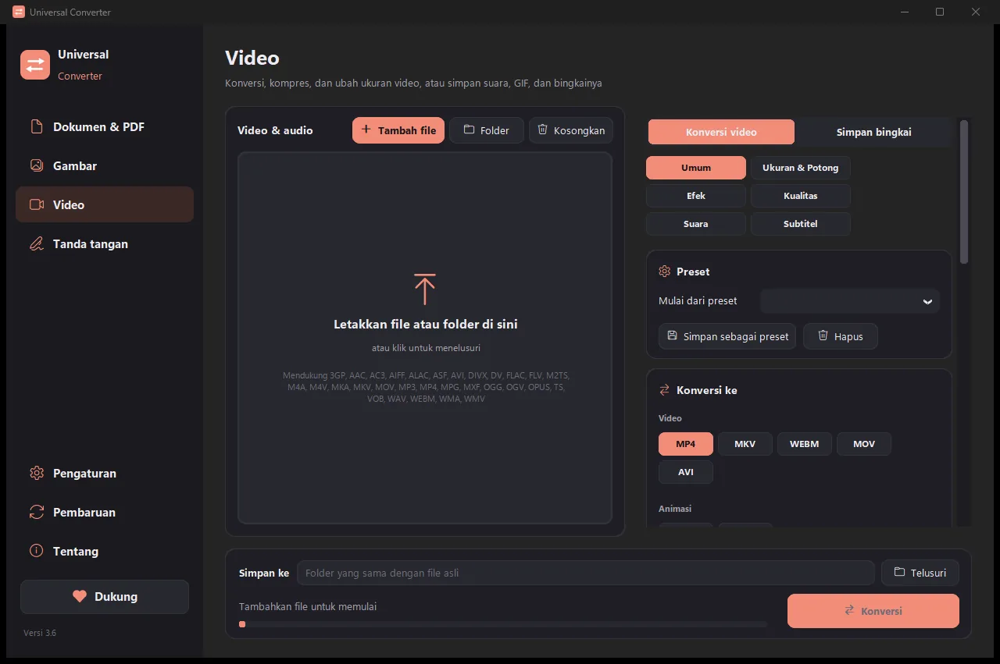
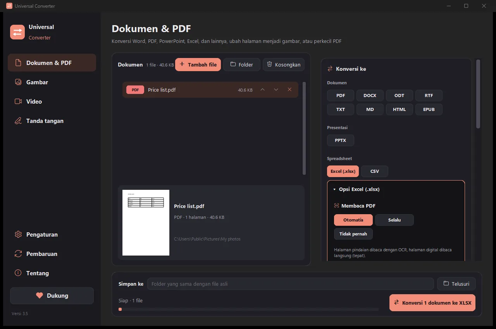
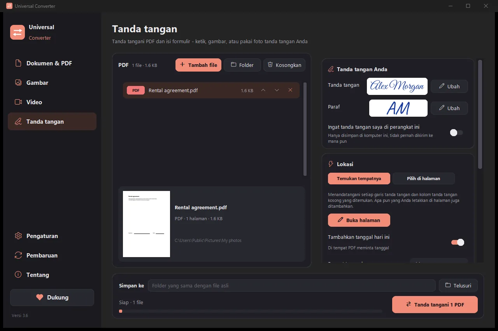
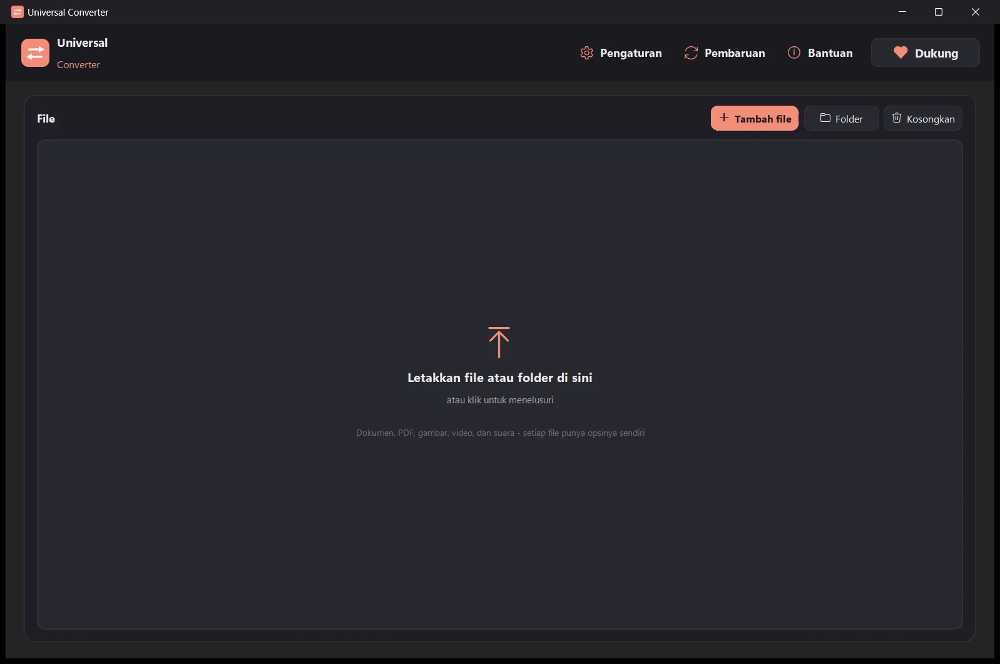

Konversi file Anda di perangkat Anda sendiri
Gambar, dokumen, video dan audio, PDF, dan tabel ke Excel, semuanya dalam satu aplikasi. Tidak ada yang diunggah: file Anda tidak pernah meninggalkan perangkat Anda.
Cara memasang dan memperbarui
- Buka file .dmg yang diunduh dan seret Universal Converter ke Applications.
- Buka aplikasinya. Saat pertama kali, macOS memblokirnya karena tidak ditandatangani oleh Apple: klik Selesai.
- Buka Pengaturan Sistem > Privasi & Keamanan, gulir ke bawah, klik Tetap Buka, lalu masukkan kata sandi Anda. Ini hanya perlu dilakukan sekali.
Pembaruan: jika Anda mengizinkannya saat aplikasi pertama kali dibuka, aplikasi memeriksa versi baru setiap kali dimulai, memverifikasi tanda tangan digitalnya, dan memasangnya saat Anda memilih.
Cara memasang dan memperbarui
- Ketuk Unduh untuk Android di ponsel Anda.
- Buka file yang diunduh. Jika Android meminta, izinkan browser atau pengelola file Anda memasang aplikasi.
- Ketuk Instal.
Pembaruan: saat Anda membuka aplikasi, aplikasi memeriksa versi baru dan memberi tahu Anda jika sudah siap. Unduh dengan cara yang sama dan pasang di atas versi lama; pengaturan Anda tetap ada.
Cara memasang dan memperbarui
- Unduh file .AppImage.
- Jadikan dapat dijalankan: klik kanan, buka Properti > Izin dan izinkan dijalankan sebagai program (atau di terminal: chmod +x Universal-Converter-*.AppImage).
- Klik dua kali. Tidak ada yang dipasang: aplikasinya adalah satu file ini.
Pembaruan: jika Anda mengizinkannya saat aplikasi pertama dibuka, aplikasi memeriksa versi baru setiap kali dimulai, memverifikasi tanda tangan digitalnya, dan menggantikan file AppImage di tempatnya.

Privat
Semuanya berjalan di perangkat Anda. Tanpa unggahan, tanpa antrean, tanpa batas ukuran.
Gratis
Gratis digunakan, tanpa iklan, tanpa akun, dan tanpa watermark.
34 bahasa
Inggris, Yunani, Spanyol, Italia, Jerman, Prancis, Portugis (Portugal dan Brasil), Polandia, Rusia, Arab, Ibrani, Tionghoa, Jepang, Korea, Tamil, Afrikaans, Yoruba, Hausa, Hindi, Indonesia, Turki, Vietnam, Swedia, Belanda, Denmark, Ukraina, Ceko, Rumania, Bulgaria, Norwegia, Melayu, Filipina, dan Swahili.
Lima alat dalam satu jendela

Dokumen & PDF
Konversi antar PDF, Word, ODT, RTF, TXT, Markdown, HTML, EPUB, PowerPoint, dan Excel. Ubah halaman menjadi gambar dan gabungkan beberapa file menjadi satu PDF. Font, ukuran, dan warna dipertahankan. Perkecil PDF sampai ukuran yang Anda pilih. Pindaian dan formulir yang sudah diisi menjadi teks dan tabel yang dapat diedit, tersusun seperti halamannya. Tabel, bahkan tanpa garis seperti pada rekening koran, masuk ke Word sebagai tabel sungguhan, dan file Word (.doc) serta PowerPoint (.ppt) lama juga bisa dibuka.
Gambar
Konversi antar JPG, PNG, WEBP, TIFF, BMP, GIF, dan ICO. Ubah ukuran berdasarkan piksel, persen, atau ukuran file, gabungkan gambar menjadi file PDF atau Word, dan baca teks dalam gambar (OCR). PDF juga dapat ditambahkan: setiap halaman menjadi gambar.

Video
Konversi video antar MP4, MKV, WebM, MOV, dan AVI, lalu kompres dengan AV1, H.265, H.264, atau VP9. Pangkas, potong, putar, dan ubah ukuran, buat GIF, simpan bingkai sebagai gambar, atau simpan suaranya saja sebagai MP3, M4A, AAC, FLAC, WAV, AIFF, OGG, AC-3, MP2, WavPack, MKA, CAF, atau Opus. Dengan beberapa video, masing-masing dapat punya pengaturan sendiri. Di Android: MP4, MKV, WebM, MOV, atau GIF, atau suaranya sebagai MP3, M4A, AAC, OGG, Opus, FLAC, WAV, AIFF, atau MKA; pangkas, potong, putar, ubah ukuran, dan simpan bingkai.

Excel
Ambil tabel dari PDF, hasil pindaian, dan foto ke Excel atau CSV: rekening koran, faktur, daftar harga. Membaca bahasa Indonesia, Inggris, Yunani, dan lebih dari 30 bahasa lain.

Tanda tangan
Tanda tangani PDF dan isi formulir. Ketik nama Anda dengan gaya tulisan tangan, gambar tanda tangan Anda, atau pakai fotonya. Setiap PDF terbuka dengan garis tanda tangan yang ditemukan aplikasi sudah ditandai: klik atau ketuk garis itu, atau tempat tanda tangan, paraf, tanggal, teks, atau centang diletakkan. Tanda tangani banyak file sekaligus; file aslinya tidak diubah.
- Memakai kartu grafis Anda untuk video jika bisa: biasanya 5 sampai 20 kali lebih cepat.
- Seret seluruh folder: setiap file dikonversi sekaligus.
- Satu layar untuk semua file: tambahkan dokumen, gambar, dan video sekaligus, dan masing-masing punya opsinya sendiri.
- Memberi tahu tentang versi baru; di Windows, Mac, dan Linux aplikasi dapat memasangnya untuk Anda, terverifikasi secara digital.
- Tampilan terang dan gelap, menyesuaikan perangkat Anda.
Cara kerjanya
- Buka Universal Converter.
- Seret file atau seluruh folder ke jendela, atau klik Tambah file.
- Klik Konversi. File baru disimpan di samping file asli, atau di folder yang Anda pilih.

Yang dapat dilakukannya
- Konversi PDF ke Word
- Konversi dokumen Word ke PDF
- Gabungkan beberapa file menjadi satu PDF
- Kompres PDF ke ukuran pilihan Anda
- Kompres PDF ke 100 KB, 200 KB, atau ukuran berapa pun untuk formulir online
- Konversi halaman PDF ke gambar JPG
- Ubah dokumen hasil pindaian menjadi file Word yang dapat diedit
- Konversi gambar antar JPG, PNG, WEBP, dan lainnya
- Ubah ukuran gambar atau perkecil ke ukuran file tertentu
- Ubah ukuran foto atau tanda tangan ke 20 KB, 50 KB, atau piksel tepat
- Gabungkan foto menjadi satu PDF
- JPG ke PDF di bawah 100 KB
- Salin teks dari gambar (OCR)
- Kompres video tanpa mengunggahnya
- Konversi video antar MP4, MKV, WebM, MOV, dan AVI
- Simpan suara video sebagai MP3
- Buat GIF dari video
- Ambil tabel dari PDF ke Excel
- Konversi PDF rekening koran ke Excel
- Ambil tabel dari faktur PDF ke Excel
- Tanda tangani PDF
- Isi formulir PDF
Pertanyaan
Apakah benar-benar gratis?
Ya. Universal Converter gratis digunakan, tanpa iklan, tanpa akun, dan tanpa batas waktu. Jika bermanfaat, Anda dapat mendukung pengembangannya dengan kontribusi sukarela, tetapi tidak pernah wajib.
Apakah file saya diunggah ke suatu tempat?
Tidak. Setiap konversi terjadi di perangkat Anda sendiri, sehingga juga berfungsi tanpa koneksi internet. Aplikasi hanya online untuk memeriksa pembaruan, mengunduh aksara pengenalan teks yang Anda pilih, dan, jika Anda izinkan, mengirim laporan kesalahan anonim.
Apakah aman diunduh?
Ya. Sebelum dipasang di halaman ini, unduhan Windows, Mac, Linux, dan Android setiap versi dipindai oleh sekitar 60–70 mesin antivirus di VirusTotal; tautan di bawah setiap tombol unduh membuka laporan file tersebut. Aplikasi ini tanpa iklan dan tidak mengumpulkan data pribadi, dan versi Microsoft Store juga diperiksa serta ditandatangani oleh Microsoft.
Windows menampilkan peringatan SmartScreen. Apakah itu normal?
Ya. Penginstalnya belum ditandatangani dengan sertifikat kode, jadi Windows belum mengenalinya. Pilih “Info selengkapnya”, lalu “Tetap jalankan”. Pembaruan setelahnya diverifikasi secara digital oleh aplikasi itu sendiri. Atau pasang dari Microsoft Store, yang tidak menampilkan peringatan.
Bagaimana cara membukanya di Mac?
Buka file yang diunduh dan seret Universal Converter ke Applications. Aplikasi ini tidak ditandatangani oleh Apple, jadi saat pertama kali dibuka, macOS memblokirnya: klik Selesai, lalu buka Pengaturan Sistem > Privasi & Keamanan, klik “Tetap Buka”, dan masukkan kata sandi Anda. Ini hanya perlu dilakukan sekali.
Bagaimana cara memasangnya di Android?
Unduh APK di ponsel Anda, buka, lalu izinkan pemasangan saat diminta (Android 10 atau lebih baru). Ke-34 bahasa sudah ada di dalamnya; pilih salah satunya di Pengaturan aplikasi. Aplikasi memberi tahu Anda jika ada versi baru.
Bahasa apa saja yang tersedia?
Aplikasi tersedia dalam bahasa Inggris, Yunani, Spanyol, Italia, Jerman, Prancis, Portugis (Portugal dan Brasil), Polandia, Rusia, Arab, Ibrani, Tionghoa, Jepang, Korea, Tamil, Afrikaans, Yoruba, Hausa, Hindi, Indonesia, Turki, Vietnam, Swedia, Belanda, Denmark, Ukraina, Ceko, Rumania, Bulgaria, Norwegia, Melayu, Filipina, dan Swahili. Anda memilihnya di penginstal, atau nanti di Pengaturan.